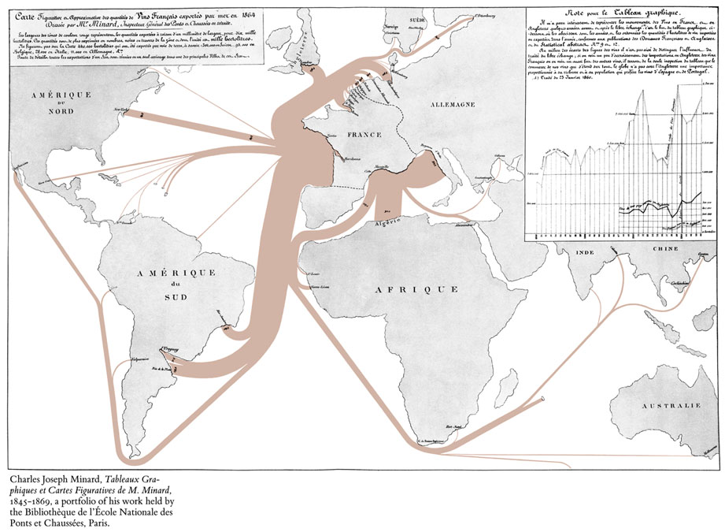
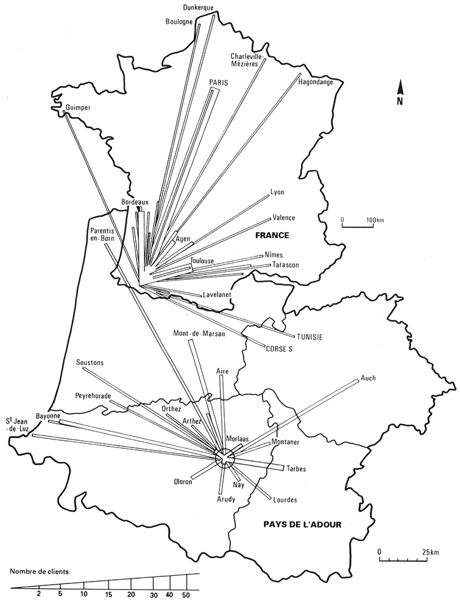
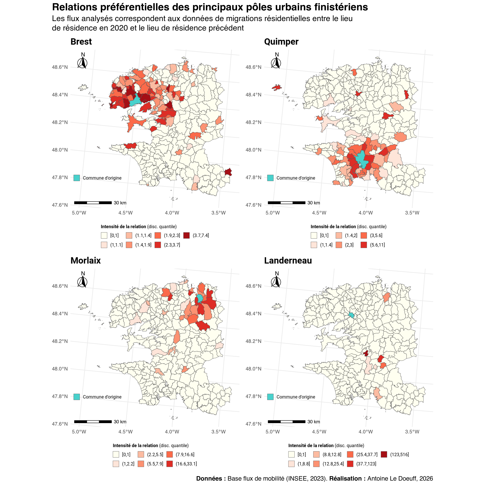

Durant ce TD, vous apprendrez à réaliser une analyse descriptive de flux.
NoteMéthode
Voilà les étapes de l’analyse :
Formulation de la question et de la méthode
Identification et collecte des données nécessaires
Prépraitement des données
Application de la méthode
Analyse des résultats
Interprétation des résultats
Le TD suit cette démarche.
Question : Comment sont réparties les migrations résidentielles des finistériens sur le territoire du Finistère et que cela dit-il de ce territoire ?
Méthode : analyse descriptive d’une matrice origine/destination (OD)
3.1 Données
Données nécessaires :
Une donnée, la plus récente possible, indiquant les flux entre chaque commune du Finistère.
Comme je souhaite réaliser des cartes, cette donnée doit-être spatiale. Si elle ne l’est pas, il faudra que je la joigne à une donnée spatiale des communes.
Le producteur des données de mobilité de référence à l’échelle du territoire français est l’INSEE (encore une fois). La donnée fournie par l’INSEE est issue du recensement de la population, vous la trouverez ici.
TipQuestion
Quand a été produite la donnée ?
Cette donnée renseigne les flux sur quelle période ?
S’agit-il d’une donnée spatiale ?
NoteInstructions : chargement des données
Charger les migrations résidentielles.
Télécharger les communes du Finistère avec happign::get_wfs(). Vous utiliserez l’argument query qui permet de filtrer les données via le langage de requête ECQL. Ici, on veut récupérer uniquement les communes dont le code INSEE commence par 29 (donc, le Finistère). Dans la mesure où le ECQL possède une syntaxe proche du SQL, on écrira la requête suivante : code_insee LIKE '29%'.
Pour rappel, pour trouver de l’aide sur une fonction, vous pouvez regarder la documentation de la fonction directement dans R : ?get_wfs(). Vous pouvez également regarder la documentation sur le site web du package s’il existe (les fonctions du package sont indiquées dans l’onglet Reference).
Code
# Charger les données INSEEdt_mobi <-read_delim("data/src/base_flux_mobilite_residentielle_2020.csv") |> janitor::clean_names()## Rows: 482070 Columns: 5## ── Column specification ────────────────────────────────────────────────────────## Delimiter: ";"## chr (4): CODGEO, LIBGEO, DCRAN, L_DCRAN## dbl (1): NBFLUX_C20_POP01P## ## ℹ Use `spec()` to retrieve the full column specification for this data.## ℹ Specify the column types or set `show_col_types = FALSE` to quiet this message.# Récupérer les communes sur le serveur de l'IGN# Ne télécharger les données que si elles n'existent pas en localcom_path <-"data/src/com_finistere_bdtopov3_2026.gpkg"if (file.exists(com_path)) {cat("Le fichier existe déjà, chargement...") coms <-read_sf(com_path)} else { coms <-get_wfs(layer ="BDTOPO_v3:commune",ecql_filter ="code_insee_du_departement = '29%'",interactive = false ) |>st_transform(2154)write_sf(coms, com_path)}## Le fichier existe déjà, chargement...
TipLe move écolo
Quand vous téléchargez des données, vous consommez de l’énergie. Si vous refaites tourner votre script de nombreuses fois, vous téléchargerez de nouveau les données autant de fois ; ce n’est pas très écolo. Aussi, une fois que vous avez téléchargé la data, vous pouvez l’enregistrer sur votre machine. Vous pouvez par exemple écrire :
com_path <-"data/src/com_finistere_bdtopov3_2026.gpkg"if (file.exists(com_path)) {print("File already exists, loading it...") coms <-read_sf(com_path)} else {# [téléchargez les données avec happign]write_sf(coms, com_path)}
La syntaxe IF/ELSE (alternative) est une des briques fondamentales de l’algorithmique. Si vous voulez plus d’informations, référez à la Section 6.1.
NoteInstructions : prétraitement
Filtrer les données de mobilités résidentielles pour ne retenir que les mobilités qui ont eu lieu en Finistère. Retirer également les mobilités intra-communales (codgeo != dcran).
Notez que l’on utilise une sparseMatrix (matrice creuse) et non une matrix ordinaire (matrice dense). Les sparseMatrix sont beaucoup plus efficientes que les matrix dans la mesure où elles ne stockent que les valeurs non-nulles.
3.2 Rappels sur les indices
Soit une matrice origine/destination (OD). On admet que les indices \(i\) et \(j\) identifie les mêmes entités spatiales. Ainsi, le flux \(O_i\) est affilié à la même entité spatiale que le flux \(D_j\).
Par caractériser les flux de chaque entité spatiale de la matrice OD, on commence généralement par calculer le volume, le solde et le taux d’attractivité de chaque entité spatiale.
Le volume\(V\) de l’entité spatiale \(i\) est la somme de son flux total émis et reçu.
Le taux d’attractivité\(A\) de l’entité \(i\) correspond au solde de l’entité \(i\) divisé par le volume de l’entité \(i\).
\[
A_{i} = \frac{S_{i}}{V_{i}}
\]
Il est également possible de construire des indices qui tirent parti de l’ensemble des informations de la matrice. On peut par exemple construire un indicateur d’attractivité\(\text{IA}_i\) pour l’entité spatiale \(i\). Ce dernier correspond au total du flux reçu dans l’entité \(i\) divisé par le total des flux émis et reçu dans l’aire d’étude.
Un indice d’émissivité\(\text{IE}_i\) peut-être calculé de façon similaire en divisant le total flux émis dans une entité spatiale \(i\) par le total des flux émis et reçus dans l’aire d’étude.
Il est possible d’évaluer le caractère préférentiel du lien entre deux entités spatiales, en comparant le flux effectif au flux attendu : c’est l’indice de relation préférentielle\(\text{IRP}_{ij}\) entre les entités \(i\) et \(j\).
Si \(\text{IRP}_{ij} > 1\), alors les lieux \(i\) et \(j\) ont une relation préférentielle : le flux observé de \(i\) vers \(j\) est plus important que celui qu’on attendrait étant donné l’émissivité de \(i\) et l’attractivité de \(j\).
3.3 Calcul des indices
NoteInstructions
À l’aide de la matrice OD, calculez, pour chaque entité spatiale : le total des flux émis, le total des flux reçus, le volume, le solde et le taux d’attractivité. Vous aurez à utiliser les fonctions rowSums() et colSums().
Pour chaque entité spatiale, calculer l’indice d’attractivité et d’émissivité.
Pour chaque combinaison d’origine/destination, calculez l’indice de relation préférentielle. Pour calculer le produit du flux total émis par l’entité \(i\) par le flux total reçu par l’entité \(j\) pour les combinaisons en une seule fois, vous utiliserez l’opérateur %o% qui symbolise le produit extérieur. Au final, vous obtiendrez une matrice des relations préférentielles. Remplacez les valeurs de la diagonale par 0 (diag(m_pref) <- 0) et remplacez les Inf par 0 (m_pref[!is.finite(m_pref)] <- 0).
Code
# Volume, arrivés, départs ...................................................# Flux total émissum_dep <-rowSums(m)# Flux total reçusum_arr <-colSums(m)# Volumesvolumes <- sum_dep + sum_arr# Soldessoldes <- sum_arr - sum_dep# Taux d'attractivitéattrac_ratio <- soldes / volumes# Indices ......................................................................tot <-sum(m)# Indice d'attractivitéia <- sum_arr / tot# Indice d'émissivitéie <- sum_dep / tot# Relations préférentielles .....................................................# Matrice des flux attendusexpected <- (sum_dep %o% sum_arr) / tot # produit extérieur# Calcul des relationsm_pref <- m / expected# Nettoyage de la matricediag(m_pref) <-0m_pref[!is.finite(m_pref)] <-0
3.4 Analyse des résultats
3.4.1 Statistiques des indices
Les indices ainsi calculé ne sont pas très lisibles. Avant d’analyser les résultats, on les enregistre dans un DataFrame pour faciliter leur analyse.
NoteInstructions : prétraitement des indices
Créez un dataframe Avec l’ensemble des indices précédemment calculés (sauf les relations préférentielles bien entendu). Chaque ligne correspondra à une commune.
Proposez des statistiques élémentaires pour chaque indices (c.f.Section 8.1.1).
3.4.2 Cartographie
Le DataFrame des indices n’est pas spatial. Il faut donc effectuer une jointure avec les communes pour pouvoir cartographier les résultats. En fonction de ce que l’on souhaite cartographier, il faudra calculer les centroïdes des communes pour réaliser une carte en cercles proportionnels.
NoteInstructions : cartographie
Joignez le dataframe des indices que vous venez de créer aux données spatiales des communes.
Si on souhaite cartographier des stocks, on utilisera des cercles proportionnels. Dans ce cadre, il faut d’abord transformer les polygones en points. Pour cela, vous créerez un nouveau data.frame spatial de géométrie points avec la fonction sf::st_centroids().
Cartographier l’ensemble des indices. Attention à la sémiologie graphique, il n’y a pas que des stocks…
Pour cartographier des cercles proportionnels avec ggplot2 et un objet sf de géométrie point, on utilise l’argument size dans l’esthétique (aes) de la couche. Pour un rendu plus léché, vous pouvez également doubler l’information en colorisant les cercles proportionnels via l’argument fill. Pour que la coloration fonctionne, il faut utilisant un symbole de point spécial pch = 21.
ggplot() +geom_sf(data = centroids,aes(size = var, fill = var),pch =21 ) + ... # le reste de votre code
Pour cartographier des choroplètes, il suffit d’utiliser l’argument fill de l’esthétique de la couche :
ggplot() +geom_sf(data = polygons, aes(fill = var)) + ... # le reste de votre code
Pour une commune que vous choisirez, cartographiez ses relations préférentielles. Vous devrez d’abord convertir la matrice des relations préférentielles en data.frame :
Vous devrez ensuite rapatrier la géométrie des communes dans le data.frame (comme précédemment) pour cartographier.
3.4.2.1 Les carte de flux sous R
Les cartes en cercles proportionnels ne sont pas vraiment appropriées quand on veut représenter des flux. On privilégiera des cartes en oursin ou des cartes de flux (Flow map) stricto sensu.

Carte de flux. Export des vins français en 1864 par Charles Joseph Minards.

Carte en oursin valué. La clientèle des services palois (services moteurs) Di Méo and Guérit (1992)
Di Méo, Guy, and Franck Guérit, eds. 1992. “Chapitre II. Étude comparée de l’offre des services aux entreprises à Pau et à Bayonne : caractères et rayonnement géographique.” In La ville moyenne dans sa région : Pau, les Pays de l’Adour et l’Aquitaine, 79–115. Politiques urbaines. Pessac: Maison des Sciences de l’Homme d’Aquitaine. https://doi.org/10.4000/books.msha.15216.
ggplot2 ne possède pas de fonction pour concevoir ce genre de cartes. Rassurez vous, je ne vais pas vous demander d’en produire une ! À la place, on peut s’appuyer sur les packages mapsf et ttt.
Par exemple, on peut cartographier l’ensemble des flux entrant et sortant pour une entité spatiale avec des flèches plus ou moins épaisses en fonction de la quantité échangée.
Code
library(mapsf)library(ttt)# Les flux associées à la communecc <-29195# Récupérer tous les flux entrant et sortant associés à la communedt_plot <-filter(dtp, i == cc | j == cc)# Récuperer le nom de la commune concernéecom <-unique(pull(filter(dt_mobi_fin, codgeo == cc), libgeo))mf_shadow(st_union(polygons))mf_map( polygons,col ="#eeedee",lwd =0.5,add =TRUE)flows <- ttt::ttt_flowmapper(x = polygons,xid ="id",df = dt_plot,dfid =c("i", "j"),col ="#ffc524",dfvar ="fij",add =TRUE)ttt::ttt_flowmapperlegend(x = flows,title ="Flux inter",txtcol ="#ffc524")mf_title(txt = glue::glue("Flux entrant et sortant de {com}"),bg ="#ffc524", fg ="White", pos ="left")mf_arrow()mf_scale()

Comme vous avez pu le constater, avec mapsf il existe des fonctions qui permettent de créer directement une flèche d’orientation (mf_arrow()) ou une échelle (mf_scale).
NoteInstructions
Regardez les flux pour d’autres communes.
Comparez les flux (entrants et sortants) de deux communes
Cartographiez l’ensemble des flux sur le territoire.
Quand on a beaucoup de flux à cartographier, il est courant de filtrer les flux de moindre importance (par-ex. par quantile).
TipQuestion
Au regard des différentes analyses réalisées, que pouvez vous dire des migrations résidentielles en Finistère ?